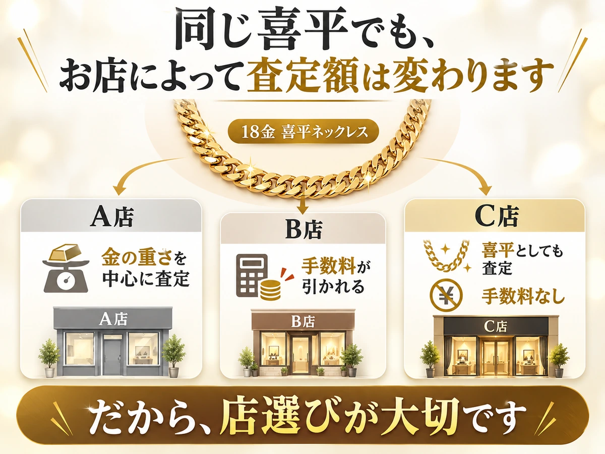
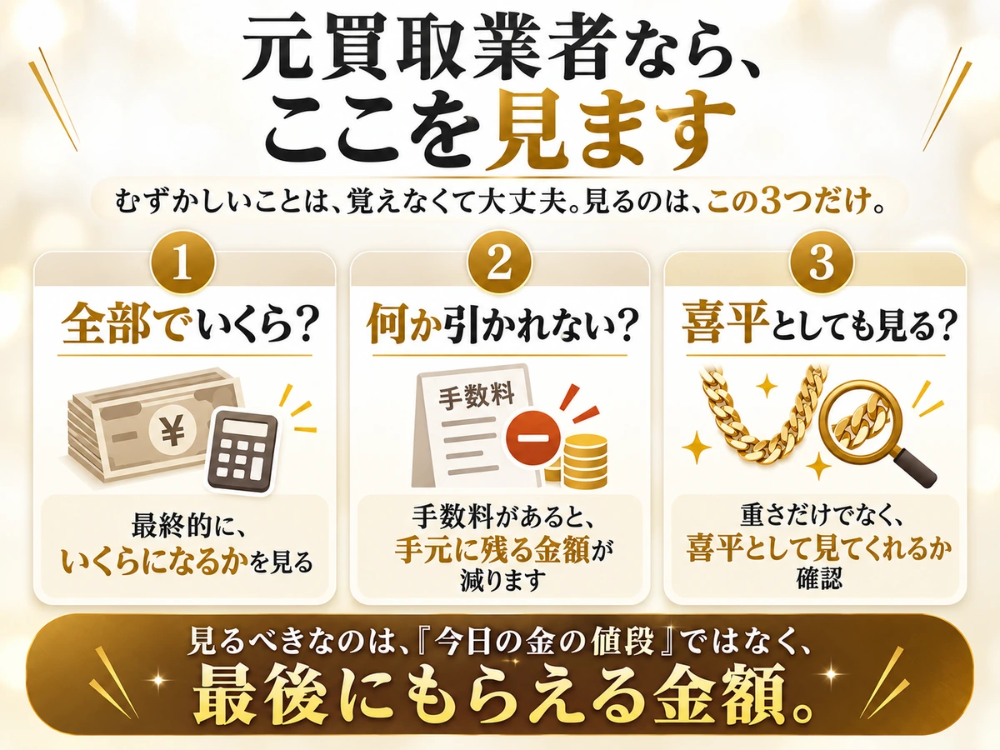
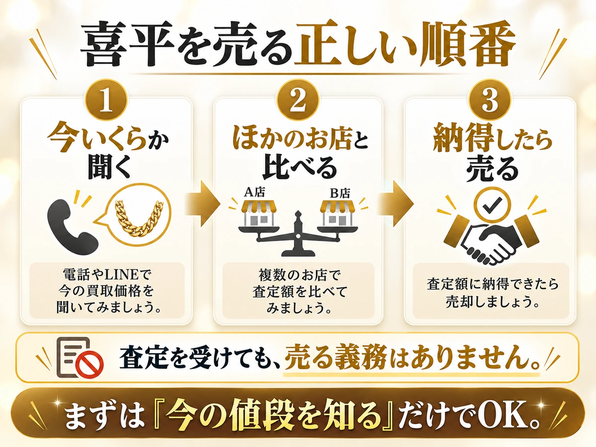
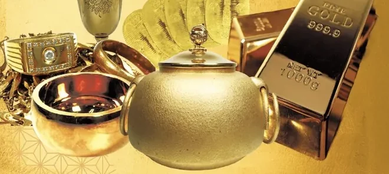
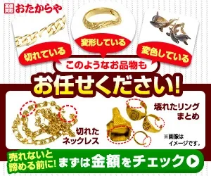
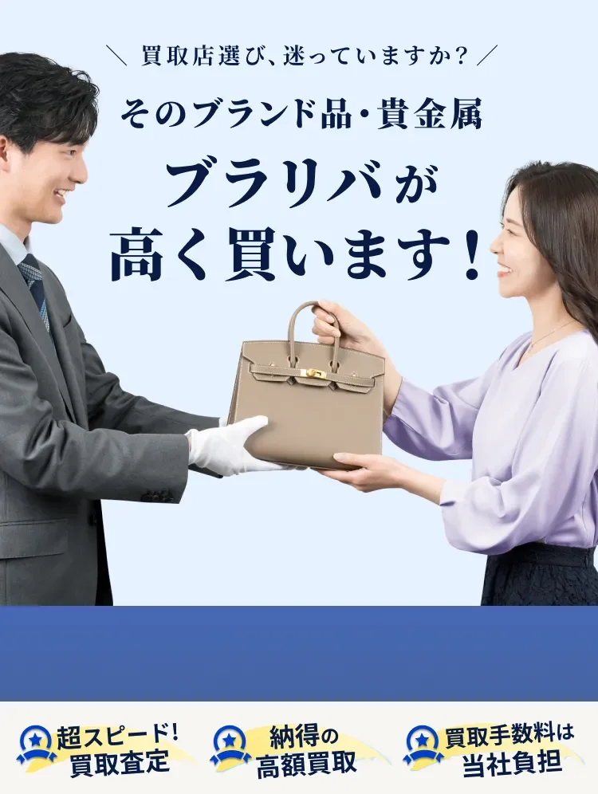

まず知りたいのは、「この喜平、いくらで売れるのか」
金の値段が高い今、18金の喜平は、思っている以上の金額になることがあります。
まずは、ざっくりの目安を見てみましょう。
18金の喜平、今日の目安
今日の18金の値段（1gあたり—円）×重さで出した目安です。
ただし、喜平は「今日の金の値段」だけで店を決めないでください
同じ18金。
同じ重さ。
それでも、お店によって
金額が変わることがあります。

大事なのは、ネットの数字ではありません。あなたの喜平が、全部でいくらになるかです。
元買取業者の私なら、ここを見ます

同じ喜平でも、持っていく店が違えば、値段が変わる。
だから、まずは
買取店を比べることが大切です。
では、喜平を売るならどこがいい？
金・貴金属の買取店3社を
比較しました。
＋
買取額20%UP
キャンペーン中
出張・宅配
出張・宅配
X線分析装置ダイヤモンド
分析機器
マイクロスコープ
アドバイザー鑑定
による鑑定
いーふらん
STAYGOLD
高価買取
電話やLINEでの
査定OK
高価買取
業界トップクラス
の店舗数
最寄り駅から
徒歩5分以内
▼本日の金の買取相場
—円/g
上の数字は、純金の今日の値段です。18金は金が75%なので、この約4分の3が目安になります。
ただし実際の金額は、喜平としての見方や手数料などで変わることがあります。
※まねきやでは9/30までお電話申込限定で、買取価格20%UPキャンペーンを実施中です。
「まずは査定だけ」でもOKです。
＊更新日時：— ＊参考価格になります。
おすすめランキング1位は、お店同士が取引する「業者の値段」で買い取ってくれて、金の手数料が0円の「まねきや」です。お電話なら買取額最大20%UPのキャンペーンも実施中（9月30日まで）。
【今が売り時？】喜平は、待つほど得とは限りません
「もう少し上がってから
売ろう」
そう思って、
そのままにしていませんか？

喜平は重いぶん、金相場が少し動くだけでも、金額の差が大きくなります。
この先、また上がる保証はありません。
売るか迷っているなら、
今の査定額だけでも確認しておく。これが大切です。
ただし、あわてて売る必要はありません
店頭で売った場合、あとからクーリング・オフはできません。
ただし、査定を受けても売る義務はありません。

「まだ売るか決めていない」
それでも大丈夫です。
まずは、今いくらになるのかだけ確認しましょう。
まねきやの電話限定キャンペーンは 9月30日まで。
↓ 値下がりする前に、喜平の今の金額を聞いておく ↓
※ 金の値段は田中貴金属の店頭小売価格（税込）。過去最高値は2026年3月3日、現在値は2026年9月25日の値です。18金は金75%として換算した目安です。過去の値動きは、将来を約束するものではありません。
※ 出典：国民生活センター「店舗でのアクセサリーまたは貴金属等の買取に関する消費者トラブルにご注意！」（2026年9月2日）
迷ったら、まねきや。損しないための理由はこれ！

- お店同士が取引する「業者の値段」で買い取ってくれる
- 金の手数料が0円。そのぶん、手元に残るお金が増える
- 値段を聞いて断っても0円。査定料・出張料・キャンセル料は無料
- 刻印がない金・壊れた金も、X線の機械で中身を測ってくれる
- 今なら電話申込で買取額最大20%UP（9月30日まで）
よくあるお店と、まねきやの違い
同じ金でも、売るお店で、受け取れるお金は変わります。
↓ 断っても0円。まずは値段だけ聞いてみる ↓
1位 まねきや

『まねきや』は、全国に30店舗以上ある買取の専門店です。金やプラチナを、お店同士が取引する「業者の値段」で買い取ってくれます。
今なら金の手数料が0円。さらに電話で申し込むと、買取額が最大20%UPするキャンペーン中です（9月30日まで）。
売り方は「お店に持っていく」「家に来てもらう」「送る」の3つ。家に来てもらう料金も、値段を見てもらう料金も0円です。
おすすめな人
- 金やプラチナを高く売りたい人
- 他店で断られた貴金属を売りたい人
- 現金での買取を希望する人
確認したいこと
- 20%UPは電話申込限定
- 上限・対象品の条件あり
- 店舗は全国30店舗以上
| 運営会社 | 株式会社 水野 |
|---|---|
| 営業時間 | 9:00〜21:00（年中無休） ※LINE査定は24時間受付 |
| 店舗数 | 全国30店舗以上 |
| 買取方法 | 店舗・出張・宅配 |
| 買取品目 | 金・貴金属／時計／宝石／ブランド品 など |


※ 店舗により内装は異なります。
電話1本で、今の値段を教えてもらえます。迷っているなら、まず聞くだけでOKです。
【ここで差がつく】手数料0円＋業者の値段で、
受け取れるお金が変わる
金を売るとき、お店によっては「手数料」が引かれます。『まねきや』は、金製品の手数料10%を0円にするキャンペーンを実施中です。
例えば、20万円分の金を売ると…
その差、2万円
※ 分かりやすくするための計算例です。実際の金額は査定で決まります。
さらに『まねきや』は、金やプラチナを業者の値段で買い取ります。
業者の値段
＝お店同士が取引するときの値段
一般のお客さん向けの値段より高いので、同じ金でも、受け取れるお金が変わります。お店のもうけを少なくして、そのぶんあなたに多く払ってくれる仕組みです。
↓ 「これいくら？」から気軽に相談 ↓
「これって金？」でもOK！査定が難しい品にも対応
『まねきや』では、他のお店で断られた金でも買い取ってもらえることがあります。
まねきやなら査定できる理由

- 高性能な専門機器を使って正確に査定
- 豊富な商品知識による確かな目利き
- レア金属を抽出するオリジナルの手法
機械を使って、その場で値段を出してくれます。金かどうか分からなくても大丈夫。捨てる前に、一度見てもらいましょう！
実際にこんな金製品が売れています！

※ 公式サイト掲載の買取実績より。特定の取引例であり、同等の金額を保証するものではありません。
使っていない金製品に、30万円以上の値段がついた例もあります。眠らせたままにせず、一度値段を聞いてみませんか。

このようなお店は少し怖いイメージがありましたが、実際に行ってみるとおしゃれで居心地も良く、店員さんに一つ一つ説明していただけました。古いお金や、最近の金の高騰で金貨が高く付いたのには驚きでした。
以前お世話になった買取店が休みだったので見て頂いたところ、X線の機械で細かく計測して頂き、前回売却した時よりも随分高く買い取って頂きました。刻印のない金やプラチナ製品でも含有量を測定できるとのことで、もっと早く伺えば良かったと後悔しました。
今回も50gのインゴットを数枚買取って頂き、金相場が上がっているとの事で購入金額よりも高く売れました。
※ 公式サイト掲載の口コミを要約したものです。感想には個人差があり、同等の対応・金額を保証するものではありません。
「断れるお店」を選ぶのが、いちばんの安全策
トラブルの多くは「断れなかった」から起きています。『まねきや』は、査定料・キャンセル料が0円と公式に書いています。値段を聞いて、納得できなければ持って帰ってOKです。
2位 おたからや
こんな人向け：近くにお店がたくさんある方がいい人

- 全国47都道府県に1,980店舗以上を展開（※1）
- 圧倒的な買取規模により高価買取を実現
- Googleの口コミで4.8の高評価を獲得（※2）
- 買取手数料・査定料が完全無料
- 査定士全員がプロの鑑定士の資格を保有
『おたからや』は、全国に1,980店舗以上ある買取の専門店。買取を25年続けていて、海外とも多く取引しています。
買い取る量がとても多いので、1つあたりを高く買いやすいのが強みです。
おすすめな人
- 相場に強い専門店で査定してほしい人
- 買取が初めての人
- 大手の安心感を重視する人
- 売れるか分からない物もまとめて査定したい人
確認したいこと
- 買取方法は店舗・出張
- 営業時間は店舗により異なる
- 受付は19時まで
| 運営会社 | 株式会社いーふらん |
|---|---|
| 営業時間 | 10時〜19時（店舗により異なる） |
| 店舗数 | 1,980店舗以上（※1） |
| 買取方法 | 店舗・出張 |
| 買取品目 | 金・貴金属／時計／宝石／ブランド品 など |
↓ 今の査定額だけでも確認できます ↓
※1 2026年9月時点 ※2 2026年1月1日〜5月31日の直営店（422店舗）に頂いたGoogleの評価をもとに公式サイトが公表している数値です ※3 お振込み対応になる可能性もございますので事前にご相談ください。
3位 ブラリバ
こんな人向け：今日すぐ現金がほしい人

- 高額査定＆即日現金化が可能
- 札幌から福岡まで全国20店舗以上を展開
- 全店舗が駅から5分以内の好立地
- 選べる3つの買取方法
『ブラリバ』は、駅から近くて使いやすい買取の専門店。仕事帰りや買い物のついでに寄れます。
近くにお店がない人は、家に来てもらう・送ることもできます。その日のうちに現金がほしい人に向いています。
| 運営会社 | 株式会社STAYGOLD |
|---|---|
| 営業時間 | 電話受付 10:00〜20:00 店舗は11:00〜20:00が基本 ※LINE査定は24時間受付 |
| 店舗数 | 全国20店舗以上 |
| 買取方法 | 店頭・出張・宅配 |
| 買取品目 | 金・貴金属／ジュエリー／時計・バッグ・ブランド小物 など |
まとまったお金が必要になったので、投資用に購入した金貨をブラリバへ売却しに行きました。スタッフがいつも丁寧に対応してくれるので、また買取をお願いしたくなります。査定にもそれほど時間がかからず利用しやすいです。
知人から18金のネックレスを頂いたのですが、あまりアクセサリーを身に付けないので迷っていたところ、ネットでブラリバを見つけました。初めての貴金属買取で不安でしたが、満足のいく金額で引き取ってもらえました。
※ 公式サイト掲載の口コミを要約したものです。感想には個人差があります。
＼即日で現金を手に入れたいならここ／
よくある質問
値段を聞くだけで、売らなくてもいいですか。
はい、大丈夫です。国民生活センターも「査定を受けても、買い取ってもらう義務はない」と案内しています。まねきやはキャンセル料も無料です。
断ったら、お金はかかりませんか。
まねきやは、査定料・出張料・振込手数料・キャンセル料を無料と案内しています。値段を聞いて持ち帰っても、費用はかかりません。
今売るのと、もう少し待つのと、どちらが得ですか。
相場の先行きは誰にも分かりません。金は2026年3月の最高値から約2割下がったように、待てば上がるとは限りません。まずは今の値段を知ってから決めるのがおすすめです。
金かどうか分からなくても、査定してもらえますか。
はい。まねきやでは専門機器を使った査定を案内しているため、金か分からない段階でも相談できます。
切れたネックレスでも査定できますか。
できます。金は素材そのものに価値があるため、変形・切れ・片方だけでも重さと純度で査定されます。
刻印が読めなくても大丈夫ですか。
大丈夫です。X線分析で含有量を測定できるため、刻印が消えている品も査定できます。
「最大20%UP」なら、必ず20%上がりますか。
いいえ。「最大」であり適用条件があります。電話で自分の品物が対象か確認してください。
手数料はかかりますか。
まねきやは金製品の手数料を無料にするキャンペーンを実施中です。表面の単価ではなく、手数料込みの最終手取りで比べてください。
「K18」とは何ですか。
金の純度を表す記号です。K24が純金に近く、K18は金が75%含まれることを示します。
金メッキでも売れますか。
メッキは表面に薄く金を塗ったもので、素材としての価値はごく僅かです。査定額が付かない場合があります。
身分証は必要ですか。
必要です。古物営業法により本人確認が義務付けられています。
遺品でも売れますか。名義が違いますが。
相続した品物は相続した方の所有物として扱われます。ご本人以外の持ち物の売却には対応できません。
未成年でも売れますか。
18歳未満の方は、保護者の同伴または同意書が必要です。
3社とも査定に出して比べてもいいですか。
問題ありません。査定は無料と案内されているため、複数社に同じ品を見せて比べる方法もあります。
【迷ったらここ！】今日やることは1つだけ。「今の値段」を聞くこと
金の値段は、明日には変わっているかもしれません。キャンペーンも9月30日までです。
「いつか売ろう」と思っているあいだにも、値段は動きます。値段を聞くだけなら0円。売るかどうかは、そのあとで決めればOKです。
待つほど、
損するかもしれない。
まずは今の査定額だけ
聞いてみましょう！
- 業者の値段で買い取ってくれる
- 金の手数料が0円
- 値段を聞いて断っても0円
↓ 締め切り前に、今の値段を聞いておく ↓
- 本ページはプロモーションを含みます
- 本ページは、公開されている情報をもとに編集部が作成した比較・紹介記事です
- 掲載の順位・総合評価・◎○などの評価は当編集部の主観的な比較であり、買取価格の優劣を保証するものではありません。「最大20%UP」等のキャンペーンは対象品・上限・併用等の条件があります
- 掲載内容は2026年9月3日時点の情報です。最新の条件は各社公式サイトでご確認ください
- 実際の査定額は、当日の金相場・重さ・純度・状態・商品によって変わります。掲載の買取実績・口コミは特定の事例であり、同等の金額や対応を保証するものではありません
- キャンペーンの適用条件・上限額は申込時にご確認ください
- 金相場の値動き（過去最高値からの下落など）は過去の実績です。将来の値動きを約束・予測するものではありません
- トラブル件数は、国民生活センターの公表資料によります